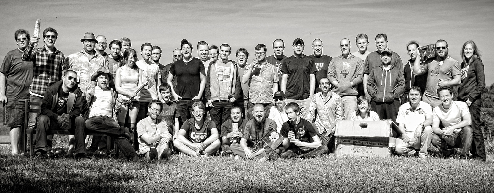

We organize offsite meetings, retreats, getaways and more for your startup
From travel arrangements, lodging, workspace to running hackathons, we can take care of it all. We can make it happen in driving distance or in a different country. For a weekend or for weeks. Flying in a distributed team or an entire office. Our service is fully customized to your needs.
Working away from the office liberates creativity, we've witnessed the birth of ideas and products during our getaways that wouldn't have happened otherwise.
Our goal is to create awesome memories for your team. Both on a professional and on a personal level. Taking people for their first time scuba diving, spending the mid-trip weekend in Paris... it's all happened, because we thrive when creating a memorable experience unique to a group.
